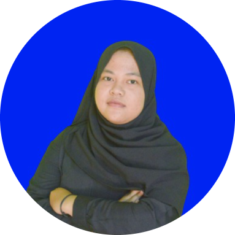

MAULINA AYU
PORTOFOLIO
Saya berasal dari Lampung Tengah, Saya merupakan mahasiswa aktif Institut Teknologi Sumatera dengan prodi yang sedang saya tempuh adalah S1 Teknik Informatika
Saya sangat menyukai hal yang bergelut dengan desain, kreativitas yang saya miliki dalam hal desain membuat saya peka terhadap hal-hal detail kecil dan mengekspresikan artistik yang saya pikirkan, saya pernah membuat desain untuk poster, logo dan lain sebagainya, karya yang saya buat bukanlah karya yang sangat besar namun semua itu mencerminkan suatu kegigihan yang saya punya. Selain itu saya merupakan seseorang yang memiliki jiwa supportif dan leadershipp yang menurut saya cukup memumpuni untuk dapat bergabung pada projek ini.
desain digital merupakan salah satu jenis seni yang sangat populer di zaman modern ini. Dengan itu saya mulai belajar untuk mendesain suatu poster dan logo dari suatu permasalahan yang disediakan saya memilik keterampilan mendesain pada aplikasi canva dan adobe shop.
Pendidikan
→ SMP NEGERI 2 SEPUTIH MATARAM
→ SMA NEGERI 2 SEPUTIH MATARAM
→ INSTITUT TEKNOLOGI SUMATERA
Pengalaman
→ Freelacer membuat poster
→ Membuat desain suatu logo

Saya merupakan mahasiswa aktif Institut Teknologi Sumatera saya berasal dari program studi Teknik Informatika, selain itu saya memiliki banyak sekali pengalaman dalam berorganisasi dan juga dalam mengikuti banyak lomba online yang tersedia di platform digital, semasa saya sekolah saya berhasil meraih banyak penghargaan dalam perlombaan pada bidang akademi, selain pada bidang akademi saya juga pernah meraih penghargaan pada bidang non-akademi.
BIODATA
| NAMA | MAULINA AYU SYAHPUTRI |
| NIM | 122140080 |
| JENIS KELAMIN | PEREMPUAN |
| USIA | 19 |
PENDIDIKAN
- INSTITUT TEKNOLOGI SUMATERA
- SMA NEGERI 1 SEPUTIH MATARAM
- SMP NEGERI 2 SEPUTIH MATARAM